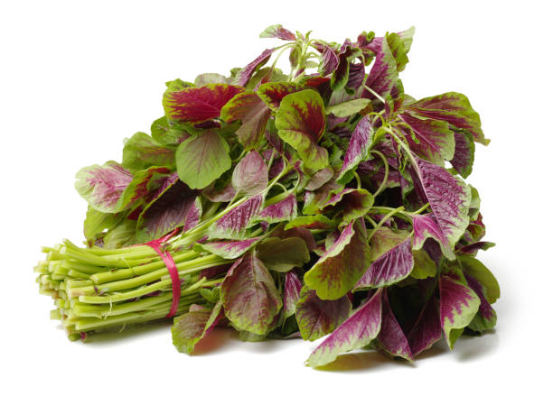
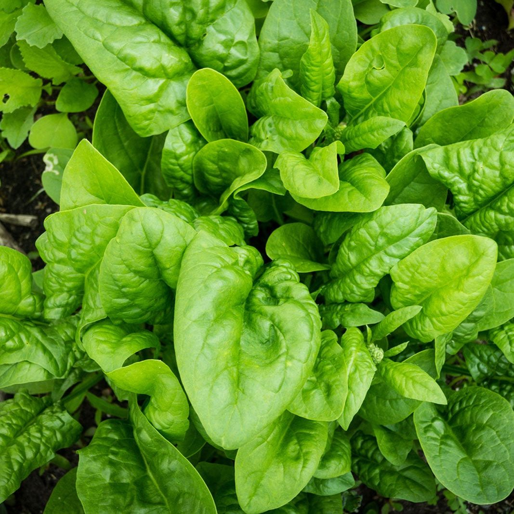
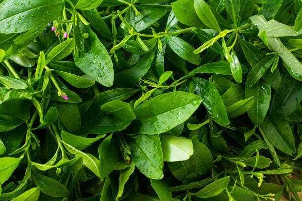
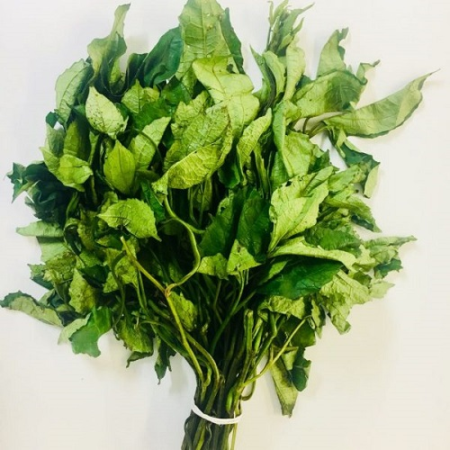
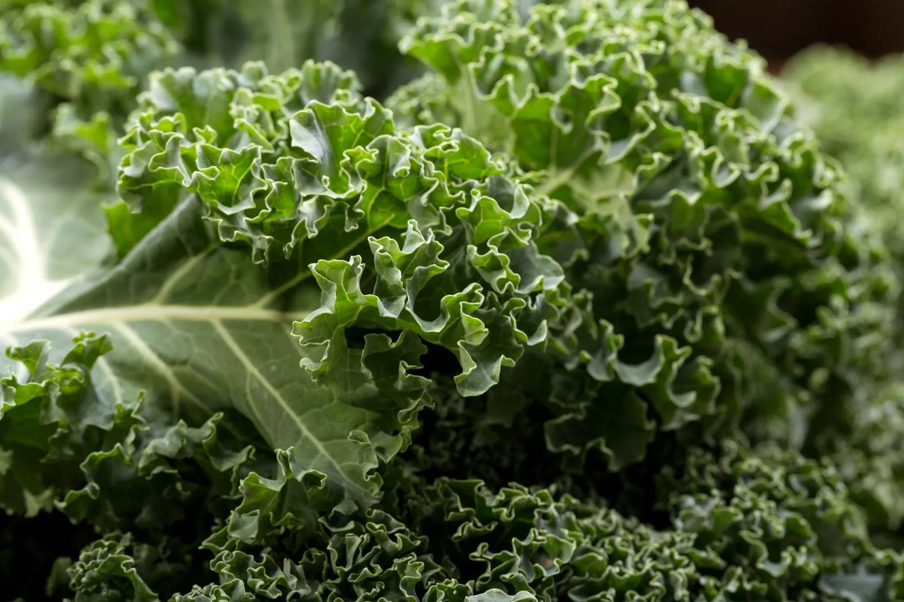
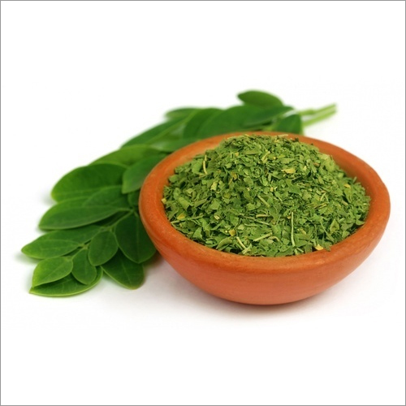
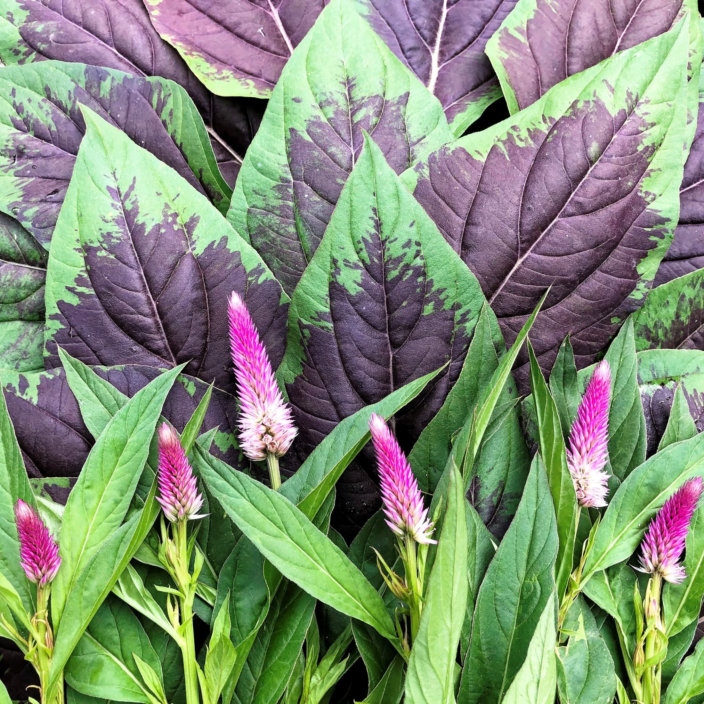
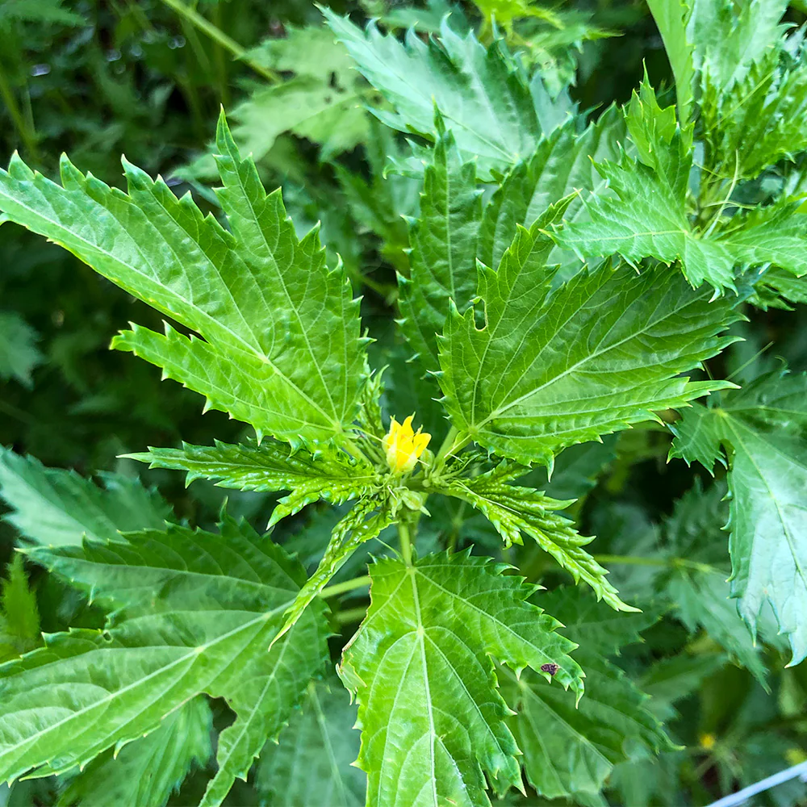
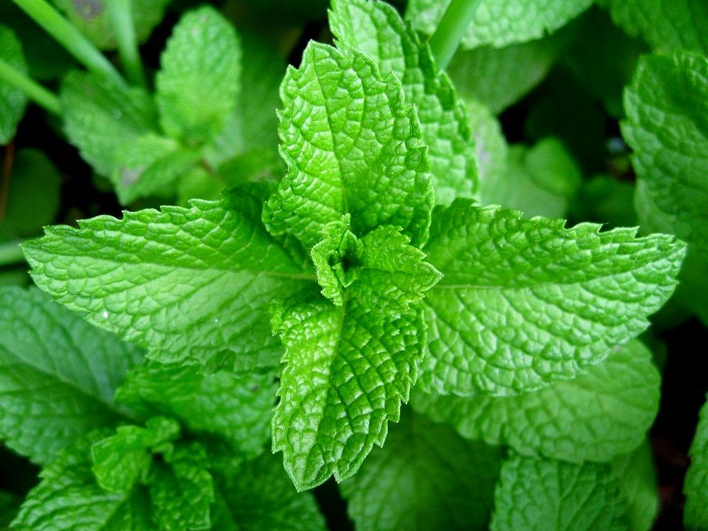
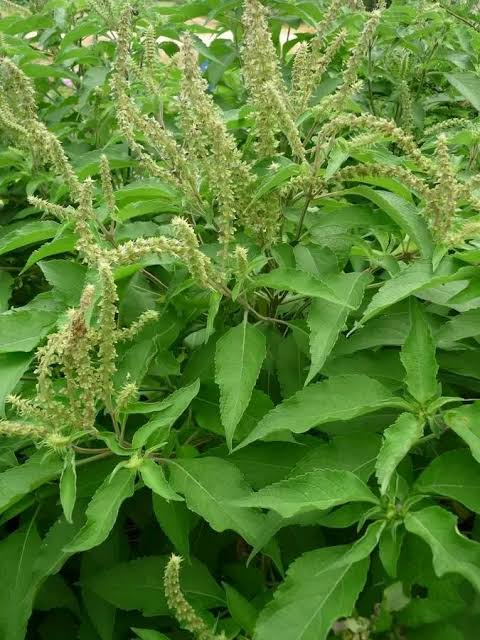

Our Farm Products
Fresh, organic and nutritious farm produce grown with care.

Amaranth Leaves
Fresh organic amaranth leaves rich in vitamins and minerals, ideal for nutritious soups and healthy meals.
Cassava Leaves
Carefully harvested cassava leaves packed with nutrients and perfect for traditional recipes.

Spinach
Tender, fresh spinach loaded with iron, vitamins, and antioxidants for everyday healthy eating.

Water Leaf
Fresh water leaves that add flavor and nutrition to soups and vegetable dishes.

Ugwu (Fluted Pumpkin Leaf)
Premium fluted pumpkin leaves rich in iron, calcium and essential vitamins.

Kale
Nutrient-dense kale carefully grown to support healthy living.

Moringa Leaves
A natural superfood containing essential vitamins, minerals and antioxidants.

Soko Leaves
Fresh soko leaves cultivated for excellent taste, freshness and nutrition.

Ewedu (Jute Leaf)
Tender jute leaves perfect for preparing smooth traditional soups.

Corchorus Leaves
Fresh leafy vegetables with excellent nutritional value.

Scent Leaf
Aromatic scent leaves that enhance the flavor of soups, sauces and herbal preparations.

Moringa Leaves
A natural superfood containing essential vitamins, minerals and antioxidants.

Soko Leaves
Fresh soko leaves cultivated for excellent taste, freshness and nutrition.

Ewedu (Jute Leaf)
Tender jute leaves perfect for preparing smooth traditional soups.

Corchorus Leaves
Fresh leafy vegetables with excellent nutritional value.

Scent Leaf
Aromatic scent leaves that enhance the flavor of soups, sauces and herbal preparations.